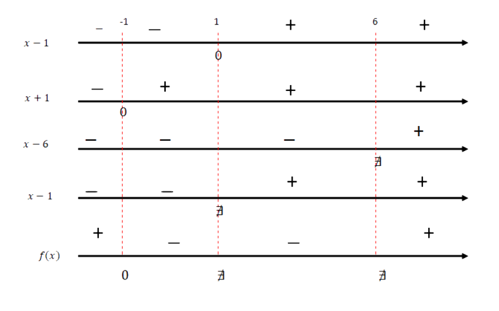
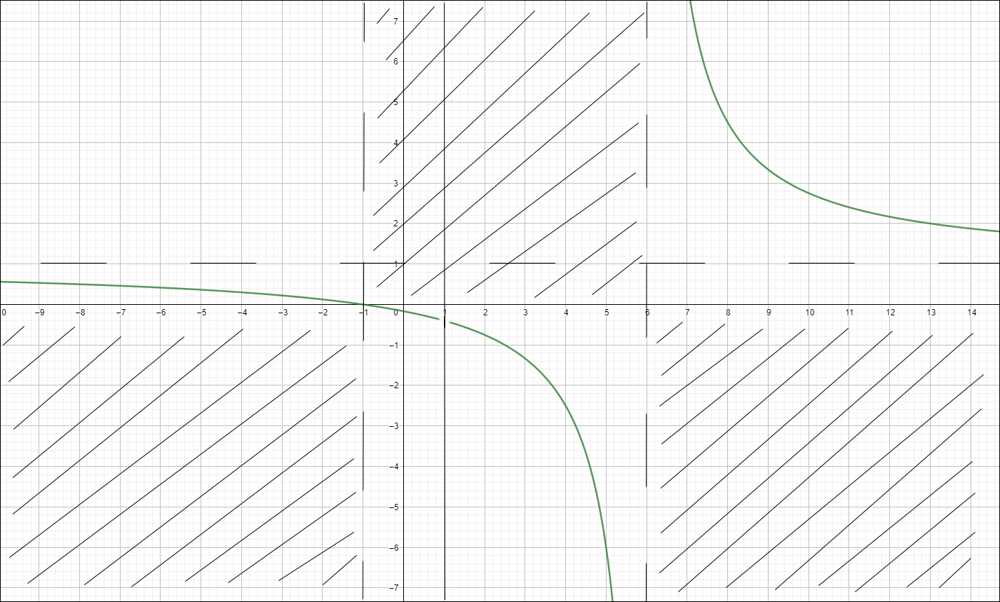
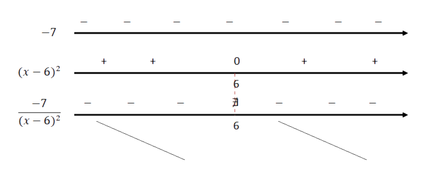

Dominio
Eventuali simmetrie
Studio del segno
Limiti della funzione &Ricerca degli asintoti
Deduzione del grafico
probabile
Calcolo delle derivate
Studio del segno della
derivata prima
Come prima cosa si determina il dominio di questa funzione: essendo fratta si deve porre il $$denominatore \ne0 $$
quindi $$x^2-7x+6\ne0$$
per risolver la disuguaglianza occorre scomporre il primo membro tramite la regola del trinomio speciale, ciò significa che esso risulta: $$(x-6)(x-1)\ne0$$ e gli unici due valori assumibili dalla x per la quale non si avvera l'equazione sono 6 e 1, quindi il dominio (essendo un insieme) si può scrivere nei seguenti modi:
$$D=\Re - \{1;6\}$$ $$D=\{x\in \Re|x \ne 1 \wedge x\ne6\}$$ $$D: \left]- \infty ;1 \right[ \cup \left] 1;6 \right[ \cup \left] 6;+\infty \right[$$
Ora si determina se vi sono eventuali simmetrie all'interno della funzione, quindi si stabilisce le la funzione è pari, dispari o nessuna delle due:
perchè una funzione sia pari $$f(-x) = f(x)$$ e perchè sia dispari$$f(-x) = -f(x)$$ quindi si calcola f(-x) per stabilire se è uguale a f(x) o -f(x) $$f(-x)= \frac {x^2}{x^2+7x+6}$$ $$f(-x) \ne \frac{x^2-1}{x^2-7x+6} \Longrightarrow f(-x) \ne f(x)$$ $$f(-x) \ne -\frac{x^2}{x^2+7x+6} \Longrightarrow f(-x) \ne -f(x)$$ quanto riportato sopra
spiega che la funzione non è né pari né dispari nel suo dominio quindi non vi sono simmetrie.
Arrivati a questo punto si può procedere con lo studio del segno della funzione: per studiare il segno della funzione si studia prima il segno del numeratore poi quello del denominatore e infine si mettono a confronto
Adesso bisogna calcolare i limiti agli estremi del dominio ed il calcolo di eventuali asintoti. Quindi calcoliamo: $$\lim_{x\to + \infty}{\frac{x^2-1}{x^2-7x+6}} = \frac{x^2 (1-\frac{1}{x^2}}{x^2 (1-\frac{7}{x}-\frac{6}{x^2})} = \frac{x^2}{x^2} = 1^+$$ $$\lim_{x\to - \infty}{\frac{x^2-1}{x^2-7x+6}} = \frac{x^2}{x^2} = 1^+$$ $$\lim_{x\to 6^-}{\frac{x^2-1}{x^2-7x+6}} = \frac{36-1}{36-42^-+6} = \frac{35}{0^-} = +\infty$$ $$\lim_{x\to 6^+}{\frac{x^2-1}{x^2-7x+6}} = \frac{36-1}{36-42^++6} = \frac{35}{0^+} = -\infty$$ $$\lim_{x\to 1}{\frac{x^2-1}{x^2-7x+6}} = \frac{(x+1)(x-1)}{(x-1)(x-6)} = \frac{2}{-5} = -\frac{2}{5}$$ Asintoti: $$Orizzontale: y=1$$ $$Verticale: x=6$$
Riassumendo abbiamo: $$f(x)>0 per x<-1 \vee x>6$$ $$f(x)<0 per -1<x<6 \wedge x \ne 1$$ $$f(x)=0 \Longrightarrow P_x(-1;0)$$ $$f(0)=-\frac{1}{6} \Longrightarrow P_y(0;-\frac{1}{6})$$ $$Asintoto orizzontale: y=1$$ $$Asintoto verticale: x=6$$
Arrivati fino a qua si calcola la derivata prima di questa funzione: $$D\left[\frac{x^2-1}{x^2-7x+6}\right]=$$ $$D\left[x^2-1\right] = 2x$$ $$D\left[x^2-7x+6\right]=2x-7$$ $$=\frac{2x(x^2-7x+6)-(2x-7)(x^2-1)}{(x^2-7x+6)^2=}$$ $$=\frac{2x^3-14x^2+12x-(2x^3-7x^2-2x+7)}{(x^2-7x+6)^2}=$$ $$=\frac{-7(x-1)}{(x-1)(x^2-12x+36)} = \frac{-7}{(x-6)^2}$$
Come ultimo punto si studia il segno della derivata per controllare gli intervalli di monotonia della funzione
La funzione è decrescente in tutto il suo dominio